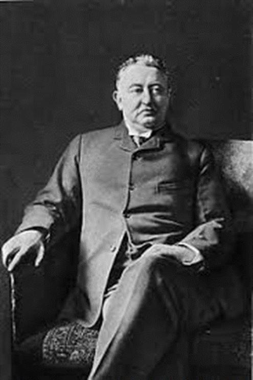

Beaucoup croient que le phénomène appelé « mondialisation » est né à l'issue de la seconde guerre mondiale. En réalité, il vient de beaucoup plus loin. Sous l'apparence d'un promoteur résolu de la paix et de la fraternité entre les nations, tels que définies dans la « Charte de l'ONU », se discerne un tout autre projet dont les origines réelles remontent au milieu du XIXème siècle.
La round table
Caroll Quigley, dans l'introduction de son ouvrage « l'histoire secrète de l'oligarchie anglo-américaine » publié par les éditions « le retour aux sources », écrit :
« Un riche jeune homme, Cecil Rhodes, croyait comme John Ruskin que seule l'élite britannique pourrait et devrait diriger le monde pour le bien et le bonheur de l'humanité.
Quel genre d'homme était Cecil Rhodes ? Il était critique de la franc-maçonnerie anglaise- de son impotence et de son incompétence- à faire progresser les intérêts de la race britannique.
Après être devenu Maître Maçon le 17 avril 1877, Rhodes élabora un projet pour un dominion mondial qu'établiraient les patriotes de race britannique. Pour garantir le financement de sa vision mondiale pour l'Empire britannique à partir de sa grande fortune, Rhodes écrivit en 1877 le premier des sept testaments qu'il rédigerait tout au long de sa vie. Le premier en appelait à la formation d'une société secrète dont la fonction première serait de se concentrer sur le retour de l'Angleterre à sa gloire d'antan »
Rhodes mourut assez jeune et c'est son légataire universel, Lord Nathan Rothschild, qui désigna Lord Alfred Milner pour présider cette société. Un certain nombre de jeunes francs-maçons anglais, tous issus d'Oxford, comme Rudyard Kipling, Arthur Balfour, Nathan Rothschild lui-même ainsi que d'autres diplômés d'Oxford.
Parallèlement à ce qui se passait en Angleterre, un groupe de banquiers anglo-saxons, dont certains étaient liés à la famille Rothschild, avaient entrepris de contrôler la monnaie américaine et, au travers d'elle, toute la finance américaine. Daniel Estulin, dans son ouvrage « La véritable histoire des Bilderbergers » écrit (page 114)
« Dans une lettre du 21 novembre 1933 à un associé, le Président Roosevelt écrivait :la réalité du problème est, comme nous le savons l'un et l'autre, qu'un élément financier des grands centres urbains est propriétaire du gouvernement depuis l'époque d'Andrew Jackson. »
La Table Ronde (round table) telle qu'elle était connue fut fondée en 1909, et devint bientôt le plus puissant organe de la confrérie britannique. Le lecteur pourra également consulter avec intérêt la page qui suit et s'il veut aprofondir le sujet, il pourra consulter ce site, montrant l'influence de la « Fabian School » sur la montée en puissance de ce mouvement de même origine.
Il existe trois « think tanks » qui en sont directement issus : le RIIA (Royal Institute of International Affairs), parfois appelé « Chattam House » créé en 1919, le CFR (Council on Foreign Relations) né en 1921 et l'IPR (Institute of Pacific Relations) en 1925.
La fin du XIXème siècle ayant été marquée par la domination de l'Angleterre sur le monde, le XXème va être sous domination américaine, mais ce sont les prolongations des mêmes groupes inspirés par les mêmes idées.
Une approche différente venue des banquiers internationaux
La stratégie de conquête inspirée par ces jeunes anglais était essentiellement militaire et reposait sur la prédominance de la marine britannique. La « Pax Britannica » qui s'étendait sur la planète entière à progressivement disparu durant la seconde moitié du XIXème siècle, ouvrant ainsi une période de conflits mondiaux.
On vit alors naître un mondialisme différent, basé sur une disparition progressive des empires, monarchiques puis coloniaux avant de pouvoir diluer les nations dans un monde sans frontières.
La disparition des empires monarchiques fut le résultat de la première guerre mondiale. Celle-ci a été rendue possible par un changement de nature des différentes monnaies des protagonistes, qui passèrent d'un statut de monnaie « métallique » (basées sur l'or) vers des monnaies « fiduciaires ».
En gros du papier imprimé auquel on donne une valeur légale. Ce fut le rôle des banques centrales, dont certaines, comme la Réserve Fédérale semblent avoir été opportunément créées. La montée des dépenses d'armement dans les pays européens avait monopolisé leurs disponibilités financières et leur interdisait de faire la guerre par manque de financement. Le crédit qu'ils obtenaient en contractant des dettes publiques auprès des banques centrales a permis l'éclatement de la guerre de 14, moins d'un an après la création de la FED. Il est curieux de constater que l'abandon de la convertibilité en or des billets émis par la banque de France, qui remontait à Napoléon, coïncide avec le début de la guerre de 14.
Le Traité de Versailles préparait la seconde guerre mondiale et terminait la première phase du plan en actant la disparition des empires monarchiques.
Il est utile de lire la biographie simplifiée d'un personnage extrêmement influent à l'origine du CFR appelé le « Colonel House »
Passons rapidement sur la suite de « l'entre-deux guerres et sur la brève existence de la SDN (Société Des Nations) dont le CFR était le promoteur. Le peuple américain avait choisi de rester dans le cadre de la doctrine Monroe et restait profondément isolationniste. Ensuite, tous les éléments de la déflagration se mirent en place, avec notamment la création de la « Banque des banques » à Bâle en 1930, connue sous le nom assez anodin de BRI (Banque des Règlements Internationaux)1.
La seconde phase prit fin en 1945 avec la guerre, à laquelle aucun des empires coloniaux ne devait survivre. Ils disparurent dans les quinze années qui suivirent.
L'hégémonie du « Deep State »
Entrainé dans une guerre dans laquelle il s'est trouvé impliqué malgré lui, le peuple américain avait largement consenti à son « interventionnisme » pour le bien apparent de l'humanité, au nom de centaines de milliers de jeunes soldats morts pour la liberté. La nouvelle donne s'établit à la surface de la planète avec deux « super-puissances » ayant chacune leur sphère d'influence telle que décidée lors de la conférence de Yalta. Toujours sous la tutelle du CFR qui y travaillait depuis 1942, la Conférence de San Francisco engendra la « Charte de l'ONU » dont on peut remarquer qu'elle s'inspire des Traités internationaux du XIXème siècle. On remarquera qu'elle établit le principe d'une autorité mondiale, préfigurant ainsi la venue de ce qui est quelquefois dénommé comme étant le NOM (Nouvel Ordre Mondial). Cependant, la guerre avait rebattu les cartes et la puissance financière des Etats-Unis, alliée à la possession de l'arme nucléaire qu'ils étaient les seuls à maitriser, les désignaient comme la puissance hégémonique. Reste à savoir qui va diriger de facto cette puissance. Les grandes multinationales ayant financé (entre autres) le « projet Manhattan » entendaient bien tirer leur épingle du jeu et les intérêts communs qu'elles avaient avec le système financier international conduisirent à former ce que Dwight Eisenhower désignera comme « le complexe militaro-industriel » dans son discours de janvier 1961.
JFK, dans son discours du 12 novembre 1963 (10 jours avant sa mort) réitéra cet avertissement au peuple américain.
Dans son livre « l'État profond américain »2, Peter Dale Scott consacre un chapitre entier à la mise en place de ce « gouvernement de l'ombre » qui s'est imposé face aux présidents américains entre 1961 et 1980 et les deux chapitres suivants (8 et 9) aux grands évènements dus aux actions entreprises par ce « pouvoir de l'ombre » Voici ce qu'il écrivait en 2014 à la fin de son avant-propos, parlant de la situation du monde :
« Dans ce contexte de guerre perpétuelle, il est urgent que les citoyens des Etats-Unis -mais aussi de la France et plus largement de l'Europe- fassent pression sur leurs gouvernements pour stopper cette stratégie basée sur le pétrole et les armes. Il est donc indispensable de mieux comprendre ce système de l'État profond, et c'est l 'un des principaux buts de ce livre »
Initialement appelé « programme du jugement dernier » sous Eisenhower après que l'URSS ait fait exploser sa première bombe nucléaire en 1949, et arguant de la nécessité d'avoir un exécutif apte à riposter en cas d'attaque soviétique qui anéantirait ses centres de commandement « officiels », il s'agissait de confier la marche du pays à un groupe de personnes non élues, mais disposant de tous les moyens nécessaires. Ce « gouvernement de l'ombre s'est ainsi étoffé durant 5 décennies et s'empara de la Maison Blanche le 11 septembre 2001 lorsque Dick Cheney s'installa aux commandes après avoir expédié GW Bush sur la côte Ouest. Ce fut le début des « printemps arabes », tous liés de près ou de loin au pétrole.
La montée en puissance du mondialisme poussé par la finance
Ainsi donc, parti de ce groupe de jeunes anglais patriotes et fortunés né à la fin du XIXème siècle, par l'établissement de ramifications successives sous forme de « groupes de pouvoir » plus ou moins occultes, ce projet, pour aussi improbable qu'il ait pu paraître, a réussi à modifier en profondeur toute la géopolitique de la planète. Chacun de ces groupes, créé dans un but précis, a permis à de franchir une à une les étapes essentielles sans que le but final n'apparaisse clairement.
L'oligarchie financière qui domine le monde, dont l'origine est plus ancienne, a certainement été le contributeur le plus important pour mener à bien le dessein de ces jeunes lords qui étaient persuadés d'être l'élite appelée à gouverner le monde, pour le plus grand bien -du moins d'après eux – de l'humanité...
Depuis la « Table Ronde » des débuts, qui a permis de constituer l'énorme pouvoir financier en prenant le contrôle de la monnaie mondiale, puis les deux guerres mondiales qui ont poussé les opinions publiques à accepter de plus en plus de fédéro-mondialisme et de moins en moins de souverainetés nationales, le rôle des organisations internationales, Chattam House et le CFR prirent le pas sur les diplomaties nationales.
L'OTAN fut créée en 1949 pour répondre à la menace soviétique en apparence, mais surtout pour doter à terme le pouvoir mondial d'un bras armé. La création en 1954 du très fermé « Club des Bilderberg » a permis de diffuser les idées mondialistes soutenues par le libre échange généralisé conceptualisé par l'école de Chicago. Daniel Estulin, dans son ouvrage paru en 20073, cite dès la première page cette phrase de Denis Headley, ancien ministre britannique de la Défense :
« Les évènements du monde ne se produisent pas accidentellement. Il est fait en sorte qu'ils se produisent, que ce soit pour des questions nationales ou de commerce, et la plupart d'entre eux sont mis en scène et dirigés par ceux qui tiennent les cordons de la bourse »
En 1973 fut créée, par les mêmes personnes dont la plupart appartenaient déjà au CFR et au Bilderberg, la « Commission Trilatérale » Le chapitre 20 du livre de Daniel Estulin, intitulé « comment formater un Président » laisse peu d'équivoque au sujet de ce groupe et des buts qu'il poursuit. On peut y lire notamment, parlant du gouverneur de la Géorgie Jimmy Carter, un propos publié dans le Times :
« À l'automne 1973, il est allé dîner avec un autre visiteur américain dont les buts ne sauraient en aucune manière être innocents, à savoir M. David Rockefeller de la Chase Manhattan Bank. Monsieur Rockefeller était à l'époque en train de constituer un groupe international avec l'aide du professeur Brzezinski de l'université de Columbia. Il était à la recherche de membres qui seraient américains... Impressionné par le Gouverneur Carter, il l'invita à rejoindre le groupe (…) ».
Voici exposée au grand jour la manière de « fabriquer un Président » grâce à l'action combinée de la finance et des médias. Mais le comble de la duperie fut atteint lorsque, s'exprimant devant la convention nationale démocrate, Carter s'attaqua « aux alliances contre-nature entre l'argent et la politique qui se perpétuent d'elles-mêmes, [...] une élite économique dont certaines décisions portent la marque et qui n'a jamais eu de comptes à rendre, pas plus qu'elle n'a eu à souffrir de l'injustice ».
À l'entendre, on aurait pu avoir l'impression que Carter était un « outsider ». Pas sûr car dans un article du Los Angeles Times de juin 1976, douze rédacteurs ayant contribué à son premier discours portant sur la politique étrangère, étaient membres du groupe CFR/TC et appartenaient au Bilderberg. « Ils avaient mis dans la bouche de Carter le discours que ses électeurs voulaient entendre »
Ce complexe militaro-industriel a évolué vers un pouvoir financiaro-médiatico-politique qui dirigeait toute la politique américaine à l'insu du peuple américain, allant pratiquement jusqu'à choisir les futurs présidents qui seraient immanquablement élus.
Le partage des domaines d'intervention
Les trois groupes totalement interdépendants et souvent constitués des mêmes personnes que sont le CFR, le Bilderberg et la Commission Trilatérale se sont partagés les rôles d'influence. D'après Daniel Estulin, tous les présidents américains entre 1912 et 2000 étaient des membres du CFR qui leur dictait quasiment leur politique étrangère, certains avaient, de plus, participé à au moins une conférence du Bilderberg et/ou de la Commission Trilatérale.
On peut résumer les rôles respectifs de ces groupes « discrets » concourant au même objectif, inchangé depuis presque 150 ans. Le CFR définit la géopolitique mondiale que ses représentants au sein de l'administration américaine entendent mettre en œuvre, éventuellement en s'appuyant sur l'OTAN et la CIA en fonction des actions décidées
Le club des Bilderberg, après avoir œuvré pour la montée en puissance de l'OTAN durant la guerre froide, s'occupe plutôt de distribuer les rôles au niveau occidental et européen en faisant élire ou nommer celles ou ceux qu'il a précédemment adoubé. Il suffit de se reporter aux listes des participants de chaque concurrence annuelle pour s'en persuader. Christine Lagarde et Ursula Von der Leyen n'y ont pas fait exception.
Il est également très intéressant de comparer la liste des invités, classés par pays d'origine avec les fonctions qu'ils ont occupées ensuite...
La Commission Trilatérale devait étendre ce plan mondialiste de l'Occident à l'Asie en s'intéressant aux relations économiques. Et en agissant pour activer les traités de libre-échange qui, par un phénomène de « proche en proche » devaient s'étendre progressivement au monde entre les deux amériques (Nord et Sud) l'Europe et l'Asie. Ainsi sont nés l'ALENA, le Mercosur, le Tafta, le TTIP ou lle CETA)
En réalité, on retrouve l'Angleterre derrière cette conception qui avait déjà inspirée dans son temps le « Commonwealth ».
Pour mieux comprendre le rôle du CFR depuis sa création, Daniel Esulin écrit (page 109) :
« De 1928 à 1972, c'est de fait un membre du CFR qui a remporté chacune des élections présidentielles. (À l'exception de Lyndon Johnson, qui fit plus que dédommager l'Establisment en affectant des membres du CFR aux postes-clé du gouvernement) Sous Reagan, il y avait 313 membres du CFR dans son administration [...].
L'éditorialiste Edith Kermit Roosevelt, la petite-fille de Théodore Roosevelt, devait dire du CFR :
« La plupart des gens ne sont pas au courant de l'existence de cette mafia. Le pouvoir de l'Establishment se fait cependant sentir, du professeur en quête de subventions d'une fondation, au candidat à un poste de Cabinet ou à un emploi au Département d'État. Il affecte la politique de la Nation dans pratiquement tous les domaines ».
Qui contrôle réellement les médias ?
Cette question est devenue fondamentale. Les démocraties sont, par essence même, la synthèse de l'opinion publique majoritaire. En théorie, chaque citoyen devrait être à même de se forger sa propre opinion, en fonction de son vécu, de sa perception du monde et des choses qui l'entourent. Bref, de ce qu'il pense être le « bien », pour lui, sa famille ou son pays. Dans la réalité, notre « instinct grégaire » nous influence. Comment les informations nous parviennent-elles ? La plupart du temps par les médias de grande diffusion, dont les propos, les écrits ou les images sont filtrés en fonction du message que les rédactions veulent faire passer. Une des grandes forces de nos jeunes anglais de la Table Ronde est d'avoir très vite compris que ces médias permettaient « d'orienter la démocratie » dans le sens qu'ils souhaitaient. Caroll Quigley consacre dans son livre un chapitre entier4 à la prise de contrôle du Times, dans lequel il raconte la captation progressive réalisée par les membres du « groupe de Milner » (future Round Table) à partir de 1884. Même si le rachat effectif du Times ne se fit qu'en 1922, le contrôle effectif datait de 1912.
Daniel Estulin consacre également un chapitre5 intitulé « Les journalistes, des Courtisans ? »
Il cite ce propos très révélateur attribué par plusieurs sources à David Rockefeller et tenu durant la conférence de Baden-Baden en 1991 :
« Nous sommes reconnaissants au Washington Post, au New-York Times, au magazine Time ainsi qu'à d'autres grandes publications dont les directeurs respectifs ont assisté à nos réunions depuis bientôt quarante ans en respectant leur promesse d'être discrets »
Il continua en expliquant :
« Il nous aurait été impossible de développer notre projet pour le monde si nous avions été soumis aux feux de l'actualité tout au long de ces années. Mais le monde est aujourd'hui plus averti et prêt à s'orienter vers un gouvernement mondial. La souveraineté supranationale d'une élite intellectuelle et de banquiers internationaux vaut surement mieux que l'autodetermination nationale en vigueur au cours des siècles passés. »
Il serait difficile d'être plus clair. Nous avons l'élite intellectuelle héritée de celle des anciens d'Oxford du groupe de Milner et de la « Round Table » qui, au fil du temps, est devenue une sorte de syndicat des banquiers internationaux qui exerce un contrôle quasi-total grâce à l'argent qui leur permet de contrôler les médias. L'opinion publique ayant été ainsi façonnée au long des décennies, la mise en place de l'objectif final, à savoir l'établissement d'un « gouvernement mondial » est dorénavant possible...
En conclusion de ce paragraphe, voici un lien vers la présentation de la conférence de Jean-Claude Manifacier à Montpellier qui traite du sujet.
Est-ce inéluctable ?
Le projet, qui a tout d'une conspiration, va-t-il aboutir ? Le livre de Daniel Estulin est paru en 2007, Celui de Caroll Quigley a été écrit en 1981. Certains évènements marquants, souvent ignorés ou du moins « minimisés » par les médias de grande diffusion, sont survenus. Parmi les plus importants, figure l'élection à la Maison Blanche de Donald Trump. Il suffit de revoir le fil de cette élection pour se rappeler combien elle était improbable. Hillary Clinton, pur produit de cet « Establishment américain » devait succéder à Barack Obama et probablement accélérer la mise en place de ce gouvernement mondial grâce à la prolifération des traités « de libre-échange » qui allaient permettre aux grandes multinationales de prendre le pas sur les État-nations.
Aujourd'hui, on peut encore en douter. Plusieurs signes témoignent d'un changement de l'opinion publique en Occident. Si les « élites » demeurent fortement mondialistes, les peuples se rendent compte qu'ils ont tout à perdre dans ce projet. Les classes moyennes, en particulier, voient leurs revenus s'éroder au fil du temps et leurs illusions commencent à se dissiper.
L'élection de Trump, faisant suite au résultat du référendum sur le Brexit, ont fortement marqués les esprits ; La rupture paraît consommée entre cet « état profond » et la politique suivie par l'administration Trump, dont les représentants du CFR commencent à être écartés.
Mais d'autres pays, et non des moindres, tels que la Chine, la Russie, l'Inde et le Brésil, semblent également ne pas vouloir accepter cette tendance mondialiste et veulent remettre les nations au centre du jeu.
L'Europe, quant à elle, n'arrive plus à trouver un cap à suivre. Le fédéralisme qui aurait dû faire d'elle « l'appartement témoin » du monde futur après la disparition des peuples et des nations s'éloigne de plus en plus devant les divergences économiques de pays utilisant la même monnaie avec des règles fiscales et sociales différentes. L'Europe des Nations, qui aurait dû s'imposer depuis longtemps n'arrive pas à se concrétiser, car les élites font tout pour l'empêcher en dénonçant le « populisme » et le « ringardisme » des nations.
Les grands projets « mondialistes » comme la « lutte contre les dérèglements climatiques » sont devenus trop outranciers pour être crédibles et les médias « main stream » perdent leurs âmes à ne pas vouloir engager de débat, se contentant d'asséner jour après jour cette « vérité faite par la loi » comme le dit Radu Portocala dans son livre paru récemment6.
Les années qui viennent seront certainement cruciales, et personne ne peut dire ce qu’il n’adviendra ni quelle sera l'issue de ce combat de Titans entre mondialistes et souverainistes.
J.G.
NOTES
1 On se reportera pour ce sujet au livre « Histoires des banques centrales » écrit par Stephen Mitford Goodson et p=et édité par les éditions « omnia veritas ».
2 L'Etat profond américain Peter Dale Scott Editions Demi Lune.
3 La véritable histoire des Bilderbergers Daniel Estulin éditions Nouvelle Terre.
4 Chapitre 6 p 171 « l'histoire secrète de l'oligarchie anglo-américaine ».
5 Chapitre 11 P 121 « la véritable histoire des Bilderbergers ».
6 « Le vague tonitruant » Radu Portocala Editions Kryos 2019.
Partager cette page